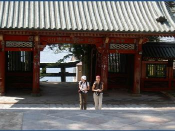
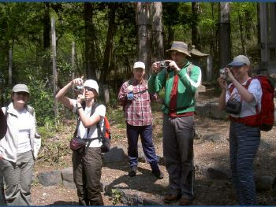
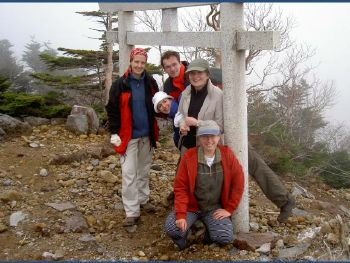
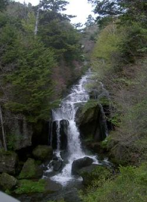
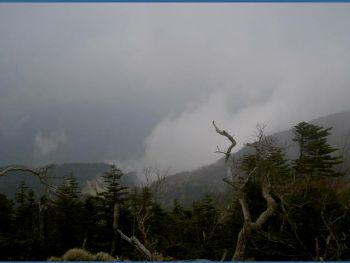
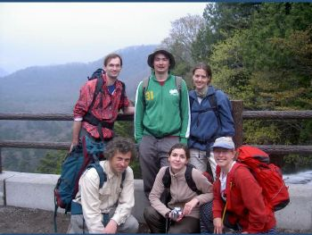
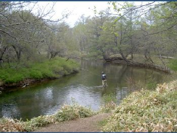
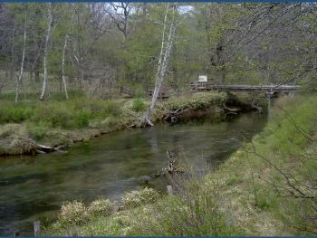

|  |  |  | ||
| the temple | on top of Nantai-san | |||
|  |
We departed from
7/11 at 5:45, arriving at the foot of Nantai-san at 8:40, having
taken the toll-route (less than 1000 Yen) between Utsunomiya and
Nikko). We started to climb at 9:10, the fastest of us making
the 1200 height meters to the top in 2:35 hours. The slowest
arrived at 12:15, still faster than maptime which is 3:30 hours.
There was only the occasional snow patch, generally it was dry.
Going down took 2:30 hours for the slowest, a little more than
map-time (2:20). Under wet/rainy conditions, Nantai-san cannot
be recommended. It would make going down difficult. The
Senjoo-ga-hara hike is an easy stroll and can be done in 2:30.
There were not many people, because it is off-season, so yes, at
this time of the year, go to Nikko! For time-planning purposes,
it gets dark at 19:00.
|
 | ||
| (above): the organizer gets thanked!! | ||||
| below: the Shoo-ga-hara marsh | ||||
|  |  |  | ||